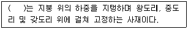
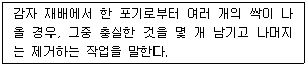
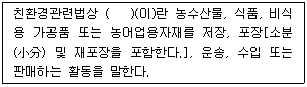
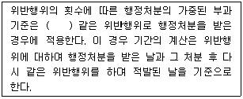
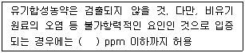
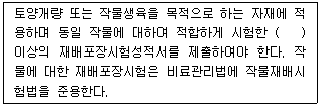
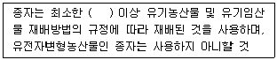
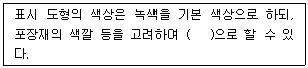
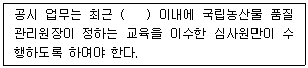

유기농업기사 (2019-08-04 기출문제)
1과목: 재배원론
1. 세포분열을 촉진하는 활성물질로 잎의 노화를 방지하며 저장 중의 신선도를 유지해주는 것으로 가장 옳은 것은?
- 옥신
- 시토키닌
- 지베렐린
- ABA
(정답률: 66%)

2. 포도 등의 착색에 관계하는 안토시안의 생성을 가장 조장하는 광파장은?
- 적외선
- 녹색광
- 자외선
- 적색광
(정답률: 51%)
3. 토마토, 당근에 해당하는 일장형은?
- 단일식물
- 장일식물
- 중성식물
- 장단일식물
(정답률: 66%)
4. C4 작물에 대한 설명으로 가장 거리가 먼 것은?
- 광 포화점이 높다.
- 광 호흡률이 높다.
- 광 보상점이 낮다.
- 광합성효율이 높다.
(정답률: 53%)
5. 화곡류의 생육 단계 중 한발해에 가장 약한 시기는?
- 유숙기
- 출수개화기
- 감수분열기
- 유수형성기
(정답률: 59%)
6. 질소를 10a 당 9.2kg 시용하고자 할 때, 기비 40%의 요소 필요량은?
- 약 4 kg
- 약 8 kg
- 약 12 kg
- 약 16 kg
(정답률: 51%)
7. 다음 중 인과류로만 나열되어 있는 것은?
- 사과, 배
- 무화과, 딸기
- 복숭아, 앵두
- 감, 밤
(정답률: 72%)
8. 세포벽의 가소성을 증대시켜 세포의 신장을 유발하는 것으로 가장 옳은 것은?
- Auxin
- CCC
- Cytokinin
- Ethylene
(정답률: 60%)
9. 우리나라 작물재배의 특색에 대한 설명으로 가장 적절하지 않은 것은?
- 토양비옥도가 낮음
- 전체적인 식량자급률이 높음
- 경영규모가 영세함
- 농산물의 국제 경쟁력이 약함
(정답률: 77%)
10. 토양 공극과 용기량과의 관계를 가장 올바르게 설명한 것은?
- 모관 공극이 많으면 용기량은 증대된다.
- 공극과 용기량은 관계가 없다.
- 비모관 공극이 많으면 용기량은 증대된다.
- 비모관 공극이 적으면 용기량은 증대된다.
(정답률: 46%)
11. 다음 중 적산온도에 대한 설명으로 가장 적합한 것은?
- 작물생육기간 중 0℃ 이상의 일평균기온을 합산한 온도
- 작물생육의 최적온도를 생육일수로 곱한 온도
- 작물생육기간 중 일최고기온을 합산한 온도
- 작물생육기간 중 일최저기온을 합산한 온도
(정답률: 73%)
12. 벼의 관수해(冠水害)에 대한 설명으로 가장 옳은 것은?
- 출수개화기에 약하다.
- 관수상태에서 벼의 잎은 도장이 억제될 수 있다.
- 수온과 기온이 높으면 피해가 적다.
- 청수보다 탁수에서 피해가 적다.
(정답률: 59%)
13. 작물의 도복에 대한 설명으로 가장 거리가 먼 것은?
- 맥류의 경우 절간신장이 시작된 이후의 토입은 도복을 크게 경감시킨다.
- 밀식하면 통풍 및 통광이 저해되어 경엽이 연약해지고 뿌리의 발달도 불량해지므로 도복이 심해진다.
- 질소 시비량을 증가시키면 도복이 억제된다.
- 맥류의 경우 이식재배를 한 것은 직파재배한 것보다 도복을 경감시킨다.
(정답률: 73%)
14. 사료작물을 혼파 재배할 때 가장 불편한 것은?
- 채종이 어려움
- 건초제조가 어려움
- 잡초방제가 어려움
- 병해충방제가 어려움
(정답률: 63%)
15. 논에 심층시비를 하는 효과에 대한 설명으로 가장 옳은 것은?
- 질산태 질소비료를 논 토양의 환원층에 주어 탈질을 막는다.
- 질산태 질소비료를 논 토양의 산화층에 주어 용탈을 막는다.
- 암모니아태 질소비료를 논 토양의 환원층에 주어 탈질을 막는다.
- 암모니아태 질소비료를 논 토양의 산화층에 주어 용탈을 막는다.
(정답률: 58%)
16. 다음 중 윤작에 대한 설명으로 옳지 않은 것은?
- 동양에서 발달한 작부방식이다.
- 지력유지를 위하여 콩과 작물을 반드시 포함한다.
- 병충해 경감 효과가 있다.
- 경지이용률을 높일 수 있다.
(정답률: 65%)
17. 다음 중 요수량이 가장 큰 작물은?
- 옥수수
- 기장
- 수수
- 호박
(정답률: 60%)
18. 작부방식의 변천과정으로 가장 적절한 것은?
- 이동경작 → 3포식농법 → 개량3포식농법 → 자유작
- 자유작 → 이동경작 → 휴한농법 → 개량3포식농법
- 이동경작 → 개량3포식농법 → 자유작 → 3포식농법
- 자유작 → 휴한농업 → 개량3포식농법 → 이동경작
(정답률: 71%)
19. 단풍나무의 휴면을 유도, 위조 저항성, 한해 저항성, 휴면아 형성 등과 관련 있는 호르몬으로 가장 옳은 것은?
- 옥신
- 지베렐린
- 시토키닌
- ABA
(정답률: 68%)
20. 녹체춘화형 식물인 것으로만 나열된 것은?
- 잠두, 무
- 추파맥류, 코스모스
- 완두, 벼
- 양배추, 양파
(정답률: 68%)
2과목: 토양비옥도 및 관리
21. 토양의 소성지수를 산정하는 계산방법으로 가장 옳은 것은?
- 소성지수 = 소상상한 - 점토활성도
- 소성지수 = 점토향량 - 소성상한
- 소성지수 = 소상하한 - 소성상한
- 소성지수 = 소성상한 – 소성하한
(정답률: 70%)
22. 다음 토양오염원 중 점오염원에 해당되지 않는 것은?
- 폐기물 매립지
- 산성비
- 산업지역
- 대단위 가축사육장
(정답률: 82%)
23. 토양단면 중 농경지의 표층토(경작층)를 가장 옳게 표시한 것은?
- Bo
- Bt
- Rz
- Ap
(정답률: 48%)
24. 밀짚의 분해를 촉진하는 방법으로 가장 적절한 것은?
- 외부로부터 산소를 공급한다.
- 외부로부터 질소를 공급한다.
- 탄질율이 600인 가문비나무 톱밥을 혼합한다.
- 외부로부터 탄소를 공급한다.
(정답률: 58%)
25. 토양산성화에 의한 작물의 생육장해 현상으로 가장 적절하지 않은 것은?
- 세균이 줄어들어 질소고정이나 질산화작용이 부진하게 된다.
- 마그네슘의 가급도가 감소하여 작물 생육에 불리하다.
- 수소이온 농도가 커지면 작물 뿌리에서의 양분흡수력이 적다.
- 활성알루미늄이 인산의 과잉을 초래한다.
(정답률: 52%)
26. 토양 용액에 해리되는 수소이온에 의해 나타나는 토양산도로 가장 적절한 것은?
- 가수산성
- 교환산성
- 활산성
- 잠산성
(정답률: 45%)
27. 토양 내 미생물의 활성도와 직접적인 연관성이 가장 적은 것은?
- 수분함량
- 토색
- 탄질율
- 온도
(정답률: 66%)
28. 어떤 토양의 용적밀도가 1.3 g/cm3, 입자밀도가 2.6 g/cm3 이다. 이 토양의 공극률은 얼마인가?
- 12.5 %
- 25 %
- 50 %
- 100 %
(정답률: 74%)
29. 다음 중 화성암에 해당하지 않는 것은?
- 석회암
- 현무암
- 화강암
- 석영반암
(정답률: 64%)
30. 토양 내 유기물의 구성성분으로서 미생물 분해에 대한 저항성이 높아 부식의 기본골격이 되는 것은?
- 단백질
- 셀룰로스
- 헤미셀룰로스
- 리그닌
(정답률: 77%)
31. 다음 질소비료에 해당되지 않는 것은?
- 인산암모늄
- 유안
- 질산칼륨
- 용과린
(정답률: 62%)
32. 다음 중 제주도에 많이 분포하는 암석은?
- 화강암
- 반려암
- 안산암
- 현무암
(정답률: 78%)
33. 다음 중 물이 흡착될 경우 가장 많이 팽창하는 광물은?
- montmorillonite
- illite
- chlorite
- kaolinite
(정답률: 65%)
34. 다음 중 화학 자급 영양생물이 아닌 것은?
- 질화세균
- 황산화세균
- 청록색세균
- 수소산화세균
(정답률: 68%)
35. 유기물의 탄질율과 가장 밀접하게 관련된 것은?
- 토양의 양이온교환용량
- 토양의 pH
- 토양유기물의 분해속도
- 토양의 염기포화도
(정답률: 61%)
36. 미국 농무성(USDA)의 토양입자 분류에 따른 미사의 지름으로 가장 옳은 것은?
- 0.⑤mm ~ 0.002mm
- 0.10mm ~ 0.007mm
- 1.0mm ~ 0.⑤mm
- 2.0mm ~ 0.2mm
(정답률: 70%)
37. 다음 중 생리적 염기성 비료는?
- 염화칼륨
- 황산칼륨
- 질산칼슘
- 황산암모늄
(정답률: 33%)
38. 미량원소 중 토양 pH가 낮아지면 유효도가 감소하는 원소는?
- Fe
- Mn
- Mo
- Zn
(정답률: 50%)
39. 우리나라 토양에 가장 많이 존재하며, 규소사면체층과 알루미늄팔면체층이 1 : 1로 결합된 광물은?
- chlorite
- illite
- vermiculite
- kaolinite
(정답률: 67%)
40. 다음 중 풍화가 가장 어려운 광물은?
- 백운모
- 방해석
- 정장석
- 흑운모
(정답률: 57%)
3과목: 유기농업개론
41. 다음 중 동상해의 재배적 대책에 대한 설명으로 가장 적절하지 않은 것은?
- 칼리질 비료의 시용량을 줄인다.
- 적기에 파종한다.
- 보온재배를 한다.
- 이랑을 세워 뿌림골을 깊게 한다.
(정답률: 64%)
42. 친환경농축산물에서 축사 조건에 대한 내용으로 가장 적절하지 않은 것은?
- 자외선을 피하기 위해 햇빛을 차단할 것
- 건축물은 적절한 단열·환기시설을 갖출 것
- 사료와 음수는 접근이 용이할 것
- 공기순환, 온도·습도, 먼지 및 가스농다가 가축건강에 유해하지 아니한 수준 이내로 유지되어야 할 것
(정답률: 77%)
43. 지력을 토대로 자연의 물질순환 원리에 따르는 농업은?
- 유기농업
- 자연농업
- 정밀농업
- 생물농업
(정답률: 75%)
44. ( ) 에 알맞은 내용은?

- 샛기둥
- 버팀대
- 서까래
- 보
(정답률: 54%)
45. 일정한 수압을 가진 물을 송수관으로 보내고 그 선단에 부착한 각종 노즐을 이용하여 다양한 각도와 범위로 물을 뿌리는 방법은?
- 저면급수
- 점적관수
- 살수관수
- 지중관수
(정답률: 70%)
46. 다음에서 설명하는 것은?

- 휘기
- 적심
- 제얼
- 적아
(정답률: 49%)
47. 다음 중 고온장해에 대한 설명으로 가장 적절하지 않은 것은?
- 당분이 감소한다.
- 광합성보다 호흡작용이 우세해진다.
- 단백질의 합성이 저해된다.
- 암모니아의 축적이 적어진다.
(정답률: 58%)
48. 가공용 감자의 저장적온으로 가장 적절한 것은?
- 25℃
- 20℃
- 15℃
- 10℃
(정답률: 48%)
49. 포기를 일정한 간격을 두고 띄어서 점점이 이식하는 방법은?
- 조식
- 대전 3포식
- 점식
- 난식
(정답률: 73%)
50. 다음 중 C4 식물에 해당하는 것으로만 나열된 것은?
- 벼, 파인애플
- 밀, 수단그래스
- 보리, 사탕수수
- 옥수수, 기장
(정답률: 76%)
51. 나트륨 증기 속에서 아크방전에 의해 방사되는 빛을 이용한 등은?
- 백열등
- 수은등
- 나트륨등
- 형광등
(정답률: 68%)
52. 우량품종에 한두 가지 결점이 있을 때 이를 보완하는데 가장 효과적인 육종 방법은?
- 여교배육종
- 집단육종
- 파생계통육종
- 1개체 1계통육종
(정답률: 78%)
53. 작물의 내염성 정도가 강한 것으로만 나열된 것은?
- 셀러리, 고구마
- 가지, 사과
- 배, 귤
- 사탕무, 양배추
(정답률: 73%)
54. 생물학적 방제법에서 포식성 곤충에 해당하는 것은?
- 꼬마벌
- 고치벌
- 맵시벌
- 풀잠자리
(정답률: 70%)
55. 유기축산물의 생산을 위한 가축에게는 “몇 퍼센트” 비식용유기가공품(유기사료)을 급여하여야 하는가?
- 약 60 퍼센트
- 약 75 퍼센트
- 약 85 퍼센트
- 100 퍼센트
(정답률: 76%)
56. 포도나무의 정지법으로 흔히 이용되는 방법이며, 가지를 2단 정도로 길게 직선으로 친 철사에 유인하여 결속시킨 것은?
- 절단형 정지
- 원추형 정지
- 변칙주간형 정지
- 울타리형 정지
(정답률: 75%)
57. 다음 중 고립상태일 때의 광포화점이 가장 높은 것은?
- 귀리
- 옥수수
- 담배
- 콩
(정답률: 70%)
58. 수경재배의 분류에서 순수수경이며, 기상배지경에 해당하는 것으로만 나열된 것은?
- 모세관수경, 훈탄경
- 분무경, 분무수경
- 사경, 역경
- 담액수경, 박막수경
(정답률: 59%)
59. 다음 중 작물의 재배에 적합성 토성의 범위가 가장 넓은 것은?
- 밀
- 담배
- 팥
- 아마
(정답률: 54%)
60. 포장동화능력의 표시방법으로 가장 적절한 것은?
- 단위엽면적 × 생장조절률 × 평균동화능력
- 단위엽면적 × 수광능률 × 평균동화능력
- 총엽면적 × 액포수용능력 × 평균동화능력
- 총엽면적 × 수광능률 × 평균동화능력
(정답률: 58%)
4과목: 유기식품 가공.유통론
61. 식품가열에 주로 사용되는 주파수는?
- 715 MHz
- 1850 MHz
- 2450 MHz
- 3615 MHz
(정답률: 66%)
62. 식품포장재료의 일반적인 구비요건으로 적합하지 않은 것은?
- 식품의 성분과 상호작용이 없어야 한다.
- 유해한 성분을 함유하지 않아야 한다.
- 적정한 물리적 강도를 가지고 있어야 한다.
- 투습도가 높고 기체를 통과시키지 않아야 한다.
(정답률: 71%)
63. 농산물 표준규격관리의 필요성에 대한 설명으로 틀린 것은?
- 품질에 따른 가격차별화로 정확한 정보제공 및 공정거래 촉진
- 유통의 효율성 제고
- 선별·포장출하로 소비지에서의 쓰레기 발생 억제
- 수송, 적재 등 유통비용 증가
(정답률: 76%)
64. 유기가공식품 제조 시 가공 방법으로 적합하지 않은 것은?
- 원료의 특성에 적합한 기계를 이용한 기계적 가공
- 첨가제와 보조제를 최대한 활용한 화학적 가공
- 열, 건조처리 등 물리적 가공
- 미생물을 이용한 발효 등 생물학적 가공
(정답률: 82%)
65. 포장이 적절하지 못한 식품을 동결하여 저장할 경우 식품표면에 발생하는 냉동해와 관련 있는 물리 현상은?
- 융해
- 기화
- 승화
- 액화
(정답률: 57%)
66. 다음 중 유기식품(organic food)이 아닌 것은?
- 유기농축산물
- 유기가공식품
- 비식용유기가공품
- 무농약농산물
(정답률: 64%)
67. 반감기가 길고, 지용성이기 때문에 동물의 지방 조직에 축적되어 만성중독을 일으키는 농약은?
- 금속제
- 유기불소제
- 유기염소제
- 유기이제
(정답률: 66%)
68. 유통경로의 수직적 통합(vertical integration)에 대한 설명으로 옳은 것은?
- 두 가지 이상의 기능을 동시에 수행한다.
- 상당히 비용이 많이 드는 단점이 있다.
- 관련된 유통기능을 통제할 수 있는 장점이 있다.
- 동일한 경로 단계에 있는 구성원이 수행하던 기능을 직접 실행한다.
(정답률: 48%)
69. 유기 과실통조림을 제조하기 위하여 사용할 수 있는 가장 적합한 박피방법은?
- 증기 박피법
- 알칼리 박피법
- 산 박피법
- 염화암모늄 박피법
(정답률: 63%)
70. 고체식품 원료로부터 유용한 성분을 추출하고자 할 때 입자를 잘게 절단하는 이유는?
- 용매흡수 촉진에 의한 침전 방지
- 용매흡수 지연에 의한 입자간 결합 방지
- 표면적 감소에 의한 추출속도 증가
- 표면적 증가에 의한 용매접촉 면적 증가
(정답률: 71%)
71. 노로바이러스의 특성으로 옳은 것은?
- 사람의 장에서만 증식되어 세포배양이 어렵다.
- 기온이 낮은 동절기에만 발생한다.
- 실온에서 장기간 생존하지 않는다.
- 물리·화학적으로 매우 불안정한 구조이다.
(정답률: 60%)
72. 작황이 좋아 풍년이 되면 농업소득이 오히려 하락하여 농민들에게 피해는 주는 현상은?
- 완전경쟁
- 직접지불
- 풍년기근
- 포전거래
(정답률: 79%)
73. 다음 중 식중독을 일으키는 균은?
- Saccharomyces cerevisiae
- Clostridium botulinum
- Lactobacillus plantarum
- Aspergillus oryzae
(정답률: 69%)
74. 유기농 참외 한 상자의 소매가격이 20000원이며, 유통마진율이 30%라고 할 때 유기농 참외 생산 농가의 수취율(Farmer′s Share)은?
- 50%
- 60%
- 70%
- 80%
(정답률: 71%)
75. 천연첨가물 중 미생물의 단백질이나 DNA의 합성을 저해함으로써 그램양성균에 대한 항균력을 가지는 물질은?
- 코지산
- 나이신
- 벤토나이트
- 유산균
(정답률: 50%)
76. 균 1개가 30분마다 분열하는 경우, 5시간 후에는 몇 개가 되는가?
- 10
- 512
- 1024
- 2048
(정답률: 70%)
77. 틈새시장(niche market)의 특성과 거리가 먼 것은?
- 시장세분화 단계에서 미개척 분야를 파고드는 전략이다.
- 경쟁구도가 잡혀 있는 시장에 진입하는 것이다.
- 소비자의 기호가 다양해지면서 틈새시장의 전력적 채택이 증가하고 있다.
- 틈새시장을 개척하기 위해서는 차별화된 제품이나 독특한 유통방법 등 특화된 영역이 창출되어야 한다.
(정답률: 76%)
78. 가열처리 용어의 정의가 틀린 것은?
- Z값 – 가열치사온도를 90% 단축하는데 필요한 시간
- D값 – 일정한 온도에서 미생물을 90% 감소시키는데 필요한 시간
- F값 – 일정한 온도에서 미생물을 100% 사멸시키는데 필요한 시간
- F0값 – 121℃에서 미생물을 100% 사멸시키는데 필요한 시간
(정답률: 48%)
79. 유기가공식품 중 설탕 가공 시, 산도조절제로 사용할 수 있는 보조제는?
- 황산
- 탄산칼륨
- 염화칼륨
- 밀랍
(정답률: 43%)
80. 포도주스의 제조와 관계없는 공정은?
- 파쇄
- 여과
- 가열
- 증류
(정답률: 69%)
5과목: 유기농업관련 규정
81. 유기가공식품 식품첨가물 또는 가공보조제로 사용이 가능한 물질 중 가공보조제로 사용 시 허용되는 것은?
- 레시틴
- 구연산
- 로커스트콩검
- 무수아황산
(정답률: 52%)
82. ( ) 에 알맞은 내용은?

- 사업자
- 민간단체활동
- 취급
- 농업유통
(정답률: 52%)
83. 유기농축산물의 함량에 따른 표시기준에서 특정 원재료로 유기농축산물을 사용한 제품에 대한 내용으로 틀린 것은?
- 표시장소는 원재료명 및 함량 표시란에만 표시할 수 있다.
- 해당 원재료명의 일부로 “유기”라는 영어를 표시할 수 있다.
- 특정 원재료로 유기농축산물만을 사용한 제품이어야 한다.
- 원재료명 및 함량 표시란에 유기농축산물의 총함량 또는 원료별 함량을 ppm 으로 표시하여야 한다.
(정답률: 75%)
84. 무항상제축산물의 운송·도축·가공 과정의 품질관리에 대한 내용에서 동물용의약품은 식품의약품안전처장이 고시한 동물용의약품 잔류 허용기준의 몇을 초과하여 검출되지 아니하여야 하는가?
- 15분의 1
- 10분의 1
- 5분의 1
- 3분의 1
(정답률: 70%)
85. 유기축산물의 사료 및 영양관리의 구비요건으로 틀린 것은?
- 반추가축에게 사일리지만 급여하지 않으며, 비반추가축도 가능한 조사료를 급여할 것
- 유전자변형농산물 또는 유전자변형농산물에서 유래한 물질은 급여하지 아니할 것
- 합성화합물 등 금지물질을 사료에 첨가하거나 가축에 급여하지 아니할 것
- 유기가축에는 90퍼센트 이상 유기사료를 급여하는 것을 원칙으로 할 것 (단, 극한 기후조건 등의 경우에는 국립농산물품질 관리원장이 정하여 고시하는 바에 따라 유기사료가 아닌 사료를 급여하는 것을 허용할 수 있다.)
(정답률: 74%)
86. 공시기관의 지정취소 등에서 정당한 사유 없이 1년 이상 계속하여 공시업무를 하지 아니한 경우에 농림축산식품부장관으로부터 무엇을 받을 수 있는가?
- 6개월 이내의 기간을 정하여 그 업무의 전부 또는 일부의 정지
- 7개월 이내의 기간을 정하여 그 업무의 전부 또는 일부의 정지
- 9개월 이내의 기간을 정하여 그 업무의 전부 또는 일부의 정지
- 12개월 이내의 기간을 정하여 그 업무의 전부 또는 일부의 정지
(정답률: 72%)
87. 친환경관련법상 인증취소 등 행정처분의 기준 및 절차에서 일반기준에 대한 내용이다. ( ) 에 알맞은 내용은?

- 최근 6개월간
- 최근 1년간
- 최근 2년간
- 최근 3년간
(정답률: 30%)
88. 농림축산식품부장관은 관계 중앙행정기관의 장과 협의하여 몇 년 마다 친환경농어업발전을 위한 친환경농업 육성계획을 세워야 하는가?
- 2년
- 3년
- 5년
- 7년
(정답률: 75%)
89. 유기가공식품·비식용유기가공품에서 생산물의 품질관리 등에 대한 내용이다. ( )에 알맞은 내용은? (단, 유기가공식품의 경우만 해당한다.)

- 0.15
- 0.10
- 0.⑤
- 0.01
(정답률: 75%)
90. 다음 중 유기농산물 및 유기임산물의 토양개량과 작물생육을 위하여 사용이 가능한 물질에서 사용가능 조건이 다른 것은?
- 대두박
- 골분
- 깻묵
- 식물성 유박(油粕)류
(정답률: 70%)
91. 친환경관련법상 식물에 대한 시험성적서의 비효(肥效)·비해(萆薢) 시험성적 검토기준에 대한 내용이다. ( )에 알맞은 내용은? (단, 효능·효과를 표시하려는 경우에 한정하고, 농작물의 범위를 추가하려는 경우를 제외한다.)

- 2개
- 3개
- 5개
- 7개
(정답률: 63%)
92. 친환경관련법상 해당 인증기관의 장으로부터 승인을 받지 아니하고 인증받은 내용을 변경한 자의 과태료는?
- 1000만원 이하의 과태료
- 500만원 이하의 과태료
- 200만원 이하의 과태료
- 100만원 이하의 과태료
(정답률: 54%)
93. 농업의 근간이 되는 흙의 소중함을 국민에게 알리기 위하여 매년 몇 월 며칠을 흙의 날로 정하는가?
- 1월 19일
- 3월 11일
- 4월 15일
- 8월 13일
(정답률: 75%)
94. 친환경관련법상 축산물의 경영관련자료에서 가축입식 등 구입사항과 번식에 관한 사항을 기록한 자료는 얼마의 기록기간으로 하는가?
- 최근 6개월간
- 최근 1년간
- 최근 2년간
- 최근 3년간
(정답률: 48%)
95. 유기식품등의 인증기준 등에서 취급자의 작업장 시설기준 구비요건에 해당하는 것은?
- 최근 6개월간 인증취소처분을 받지 않은 작업장일 것
- 최근 9개월간 인증취소처분을 받지 않은 작업장일 것
- 최근 1년간 인증취소처분을 받지 않은 작업장일 것
- 최근 2년간 인증취소처분을 받지 않은 작업장일 것
(정답률: 72%)
96. 유기농산물 및 유기임산물에서 재배포장, 용수, 종자의 구비요건에 대한 설명이다. ( )에 알맞은 내용은?

- 1세대
- 2세대
- 3세대
- 4세대
(정답률: 57%)
97. 유기식품등의 유기표시 기준에서 유기표시 도형의 작도법에 대한 내용이다. ( )에 옳지 않은 내용은?

- 빨간색
- 주황색
- 파란색
- 검은색
(정답률: 65%)
98. 친환경관련법상 공시기관의 지정기준의 인력에 대한 내용이다. ( )에 알맞은 내용은? (단, 보수교육을 포함한다.)

- 3년
- 2년
- 1년
- 6개월
(정답률: 54%)
99. 유기농산물 및 유기임산물의 병해충 관리를 위하여 사용이 가능한 물질에서 생석회(산화칼슘)이 사용가능조건은?
- 토양에 직접 살포하지 않을 것
- 감의 숙성을 위하여 사용할 것
- 단순 물리적으로 가공한 것만 사용할 것
- 천연규사를 이용하여 제조한 것일 것
(정답률: 67%)
100. 유기축산물 및 비식용유기가공품의 유기배합사료제조용 물질 중 단미사료에서 사용가능 조건이 “순도 99.9퍼센트 이상인 것일 것”에 해당하는 것은?
- 어분
- 우지
- 육분
- 유제품
(정답률: 47%)